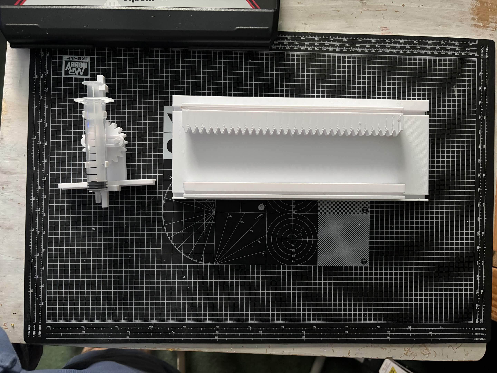
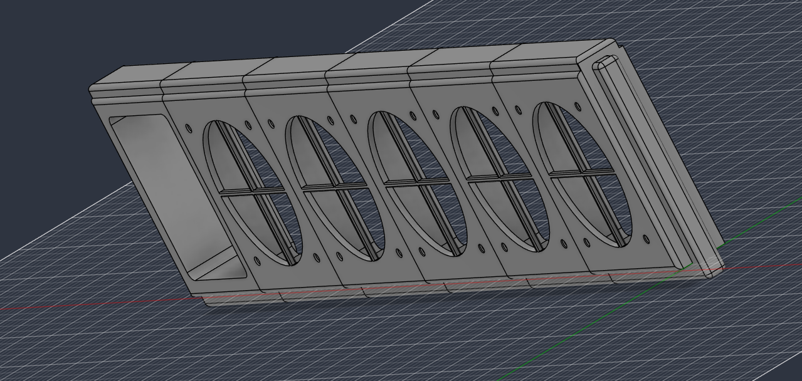
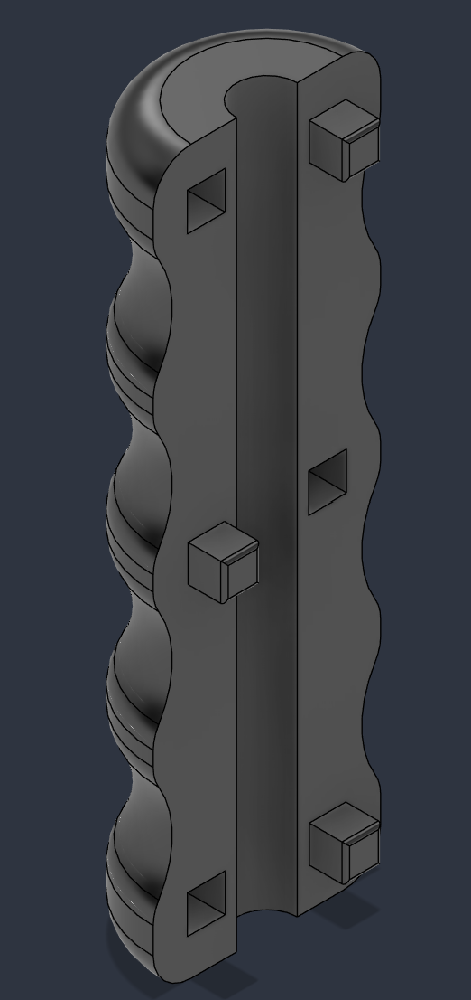
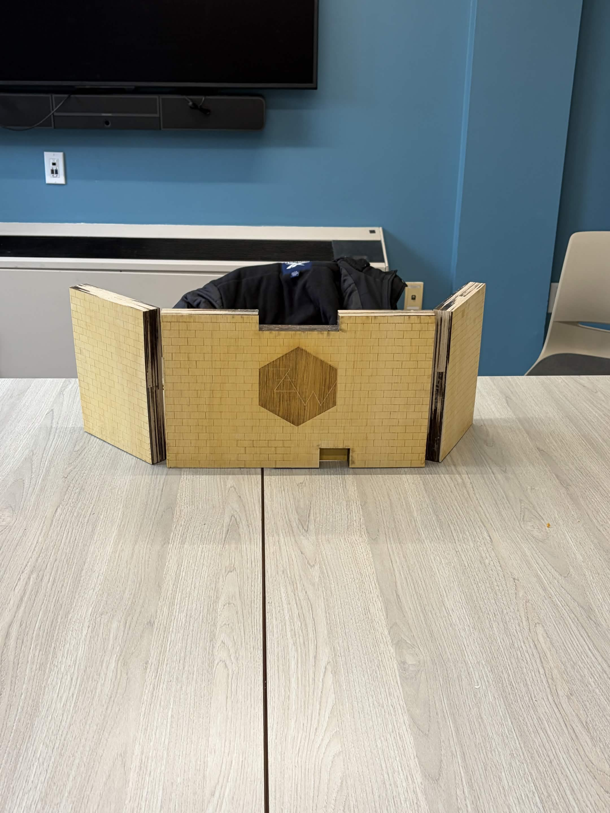
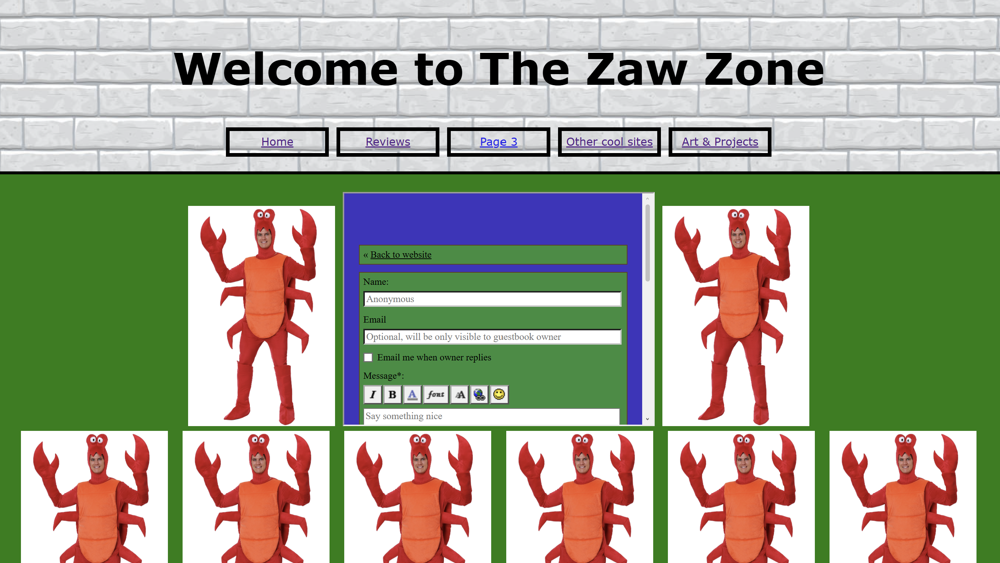
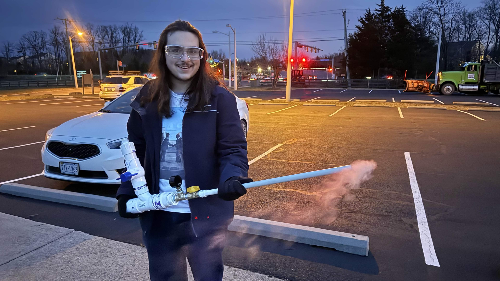

Independent Projects
Independent Projects
Fluid Management System
Timeline: Mar 2026 - present Team: One mechanical engineer / independent
Objective: To create a reproducible machine capable of several liquids between containers for use in other projects
A 3-axis gantry controls a pump to extract and deposit liquids of choice from and into chosen locations, with planned applications being liquid water quality testing and making soft beverages.

An early version of the system where a syringe pump would dip down as it moves horizontally
Window Exhaust System
Timeline: May 2026 - Present Team: Individual
Objective: To make a machine able to connect to a window and allow for fumes to be exhausted from other machines
A series of computer fans are controlled using an ESP-32 microcontroller with swappable attachments to connect to 3D printers, laser cutters, and other machines that release fumes.

Fusion 360 model of the insert for five fans and an electronics box
Ergonomic 5-Gallon Bucket Handles
Timeline: May - Jun 2026 Team: Individual
Objective (commissioned by Glen Echo Park Aquarium): To create ergonomic replacement handles for 5-gallon buckets
Handles to replace broken or missing originals were made for 5-gallon buckets. Multiple designs were created out of PLA to create a long-lasting, ergonomic, and comforable end product.

CAD model of the final version of the handle
Wooden DM Screen
Timeline: Jan 2025 - May 2026 Team: Individual
To create a DM ("dungeon master") screen with features to assist in running physical tabletop roleplaying games
Over 100 laser cut wooden pieces were glued together to create a DM screen with various features, such as inlayed whiteboards and cork sheets, containers for storing accesories and a timer, and two "dice towers" for rolling dice in front or behind the screen.

Assembled and oiled backside of the screen
Websites
Timeline: Dec 2025 - present Team: Individual
Objective: To make and maintain personal and professional websites as a means to share personal experiences
Since December of 2025, multiple websites have been developed personally, with one being personal and the other (this one) being professional and represeting projects worked on.
Documentation:
Personal site
Profession/portfolio site
Documentation:
Personal site
Profession/portfolio site

Screenshot from the neocites personal website
Dry Ice Cannon
Timeline: Jan 2025 Team: Three interdisciplinary engineers
A cannon that uses dry ice mixed with water to build pressure and launch small wooden projectiles.
A PVC cannon was created featuring a chamber for inserting water, a chamber for inserting dry ice, a mixing chamber controlled by a ball valve, and a pullstring trigger to fire a wooden proctile. The furthest launch measured ~15m for a wooden dart.

Finished product held after a test fire